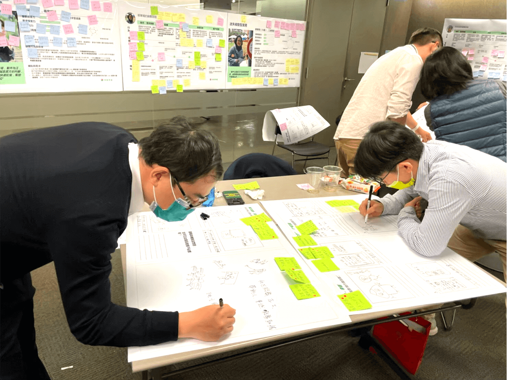
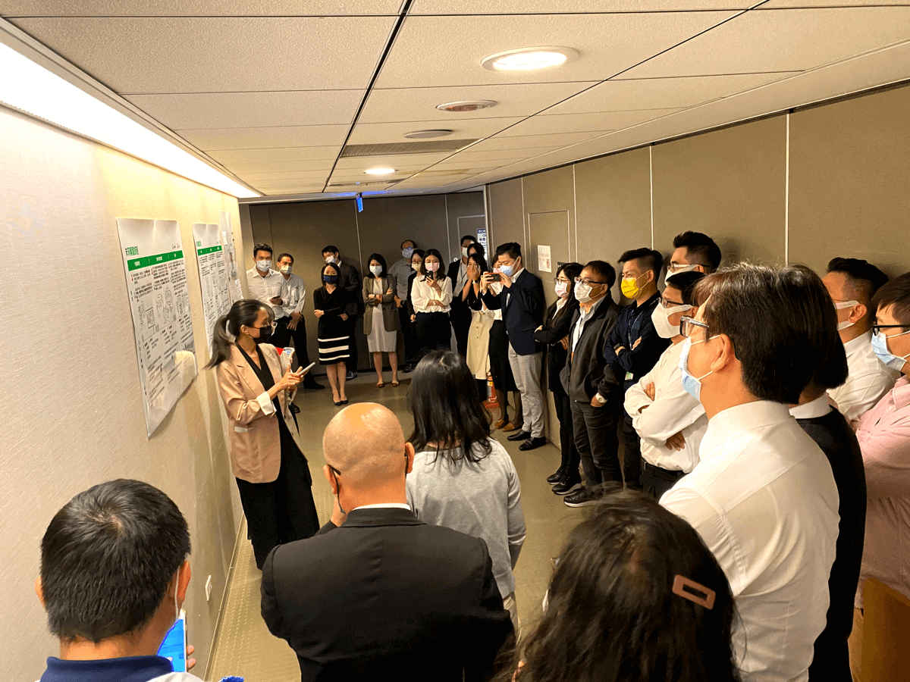
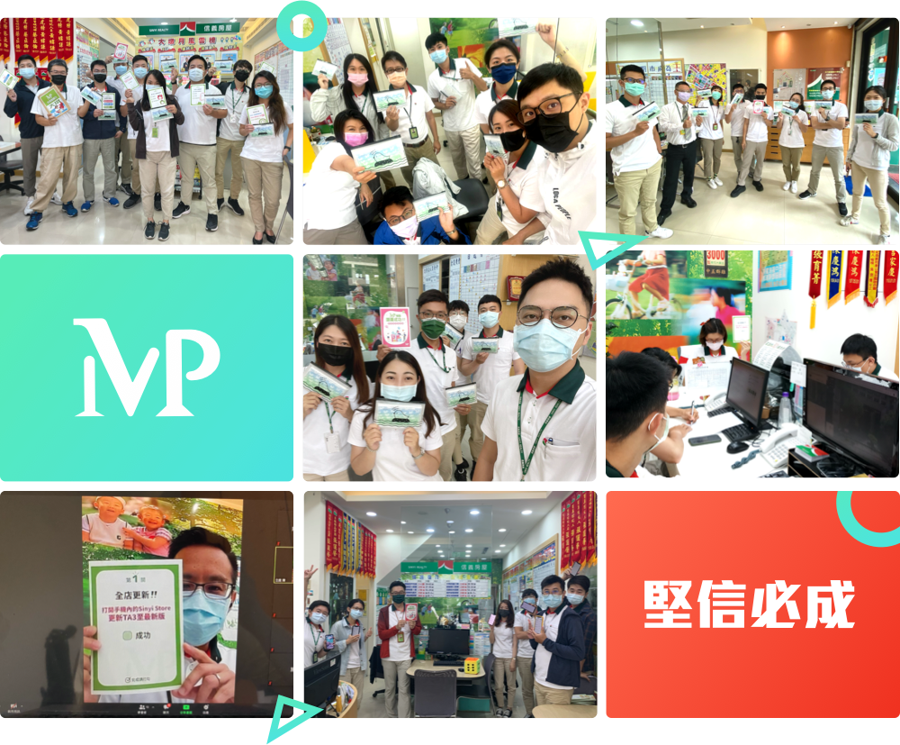

從今年三月開始，轉型辦公室團隊開始在想，能做些什麼幫助業務同仁更有效率地作業，為了規劃出更貼近前線使用的工具與機制，在麥肯錫的協助下，我們舉辦了工作坊，邀請不同單位的幕僚與前線業務一起發想同仁的痛點與解決方法。


在收集大家的回饋之後，我們也召開了各式會議，確立方向並開啟專案，動員各單位人力與資源，積極與IT技術人員緊密合作，將我們大家對於未來的想像，成為現實可用的工具。
MVP計畫正式上線前，我們積極與前線互動
希望所有夥伴可以盡可能地了解計畫內容，也鼓勵彼此敞開心胸溝通共創。


2021/06/07這天，MVP計畫正式啟動，由業三區與中五區的全體夥伴做為先行，即使疫情產生的變化，仍不阻擋我們彼此間的溝通與連結， 所有分店無論透過線上或線下，店長帶著全體夥伴一起勇闖我們準備的關卡，一步一步進入MVP的世界。
不同以往的你說我做，我們與先行區成立LINE群，即時回答問題與收集反饋。每天轉型團隊都會花30分鐘到1個小時，把來自第一線的聲音做互動與討論， 爭取即時解決問題，並將需要優化的項目盡快排入迭代日程，讓系統機制變得更好， 這就是我們轉型辦公室目前在做的事情之一。
產品上線，並不是發表會結束就結束了讓前線與後勤持續共創迭代，
才能讓我們MVP成為名副其實的最有價值產品